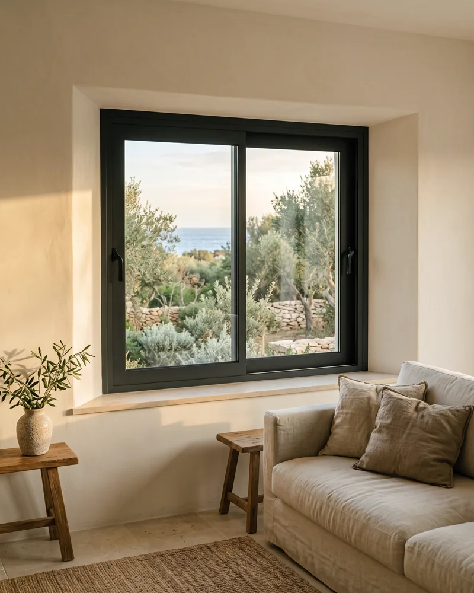
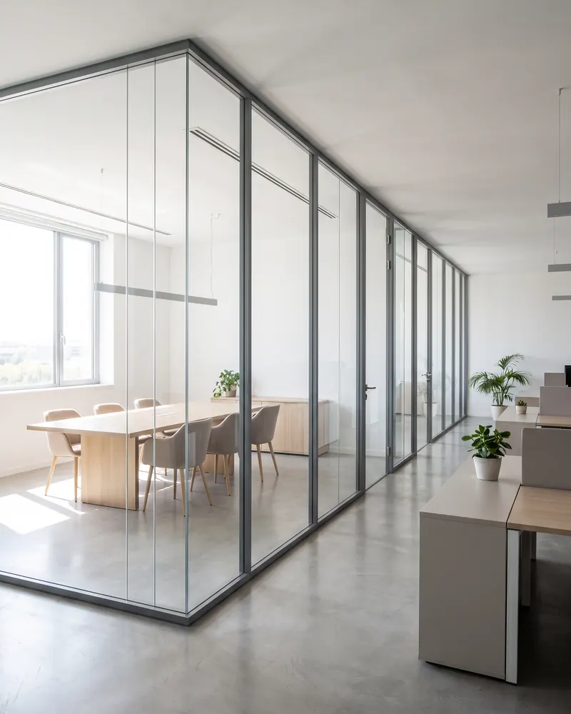

Ürünler ve sistemler.
Pencereden cepheye, pergoladan kış bahçesine. Hepsi alüminyum, hepsi projenize özel ölçüde üretilir ve Kıbrıs'ta yerinde monte edilir.

Alüminyum pencere
İnce profiller, geniş cam yüzeyler ve ısı yalıtımıyla aydınlık, konforlu mekânlar.
Pencere sistemleri · Alüminyum doğrama

Alüminyum kapı
Giriş kapılarından slimline kapılara; sağlam, zarif ve uzun ömürlü.
Giriş kapısı · Slimline kapı

Alüminyum pergola
Sabit gölgeden açısı ayarlanan lamellere. Otomatik ya da manuel kontrol.
Pergola · Biyoklimatik pergola · Tente

Alüminyum kış bahçesi
Bahçenin keyfi dört mevsim; yağmurda da, kışın da.
Kış bahçesi · Otomatik tavan sistemleri

Alüminyum cephe giydirme
Binaya yeni bir yüz kazandırır, dış etkenlere karşı korur.
Konut · Ticari · Endüstriyel yapılar

Alüminyum cam küpeşte
Temperli cam ve alüminyum profille güvenli, manzaraya açık korkuluk.
Balkon · Merdiven · Teras · Havuz kenarı

Alüminyum sineklik
Kapı ve pencerenize uyumlu, kolay açılıp kapanan sineklikler.
Menteşeli · Sürme · Pileli

Alüminyum ofis bölmeleri
Cam ve alüminyumla aydınlık, esnek çalışma alanları.
Toplantı odası · Yönetici odası · Açık ofis
Projenize uygun sistemi birlikte seçelim.
Teklif alın

Neden alüminyum?
- Dayanıklı
- Paslanmaz yapısıyla zorlu hava koşullarında yıllarca formunu korur.
- İnce profil, geniş cam
- Daha geniş cam yüzey, daha fazla gün ışığı.
- Enerji verimli
- Isı yalıtımlı sistemlerle kışın sıcak, yazın serin mekânlar.
- Geri dönüştürülebilir
- Çevreye duyarlı projeler için doğru malzeme.
E-Katalog
Sistemlerin tamamını kataloğumuzda inceleyin.
Sık sorulan sorular
Aluser hangi ürünleri sunuyor?
Aluser; alüminyum pencere, kapı, pergola, kış bahçesi, cephe giydirme, cam küpeşte, sineklik ve ofis bölmeleri sunar. Otomatik tavan sistemleri, biyoklimatik pergola ve tente de ürünler arasındadır.
Neden alüminyum?
Alüminyum sağlam ve hafiftir, paslanmazdır ve bakımı kolaydır. İnce profillerle geniş cam yüzeyler sağlar, ısı yalıtımlı sistemlerle enerji verimlidir ve geri dönüştürülebilir.
Ürünler ölçüye göre mi üretiliyor?
Evet. Her ürün keşifte alınan ölçülere göre, projenize özel üretilir.
Keşif ve teklif nasıl alınır?
0539 108 45 45'i arayın ya da aynı numaraya WhatsApp'tan yazın. Ekibimiz mekânı yerinde görür, ölçü alır ve teklif hazırlar.